Радио Energy
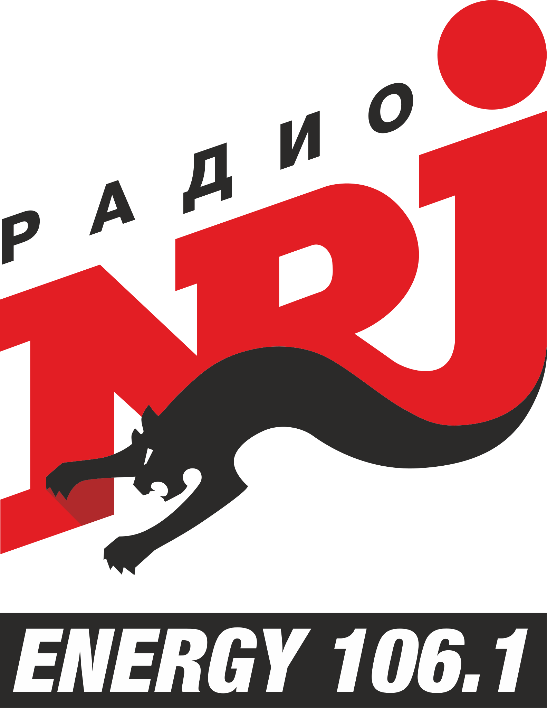
106.1 FM
Музыкальное наполнение эфира
РАДИО ENERGY – имеет устойчивый имидж модной, прогрессивной, популярной станции – законодателя музыкальной моды. РАДИО ENERGY – это европейская медиа-индустрия высокого качества. Постоянные проекты со звездами мировой величины. В эфире только чартовые исполнители, актуальные новинки, хиты и проверенная популярная музыка зарубежных и отечественных исполнителей!
Телефон прямого эфира:
(3822) 52-32-00
Написать в эфир
+7 (963) 193 1061
Радиохолдинг «Дайджест FM» плывет по волнам тринадцати радиостанций города
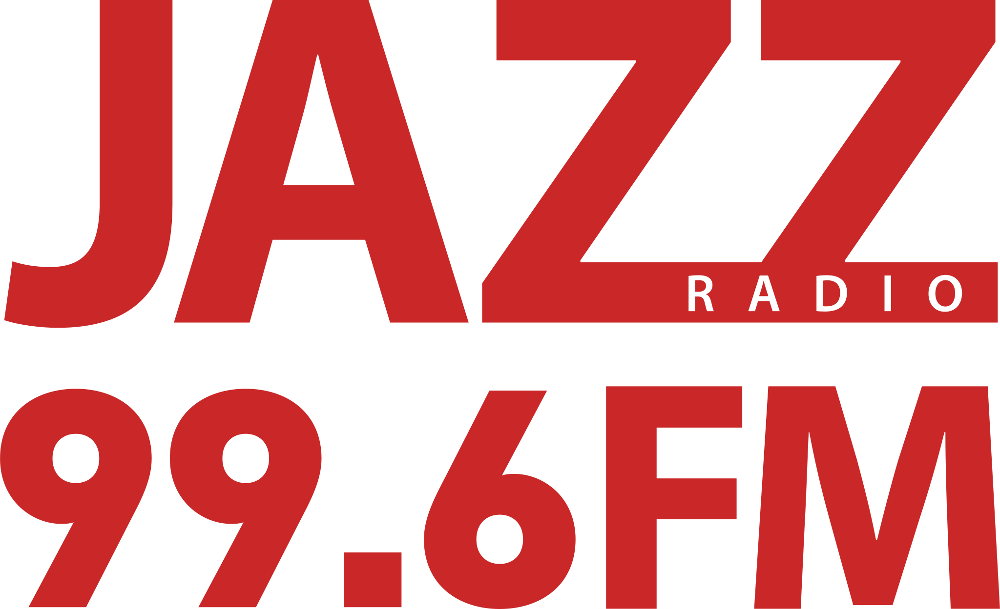
Радио JAZZ
99.6 FM
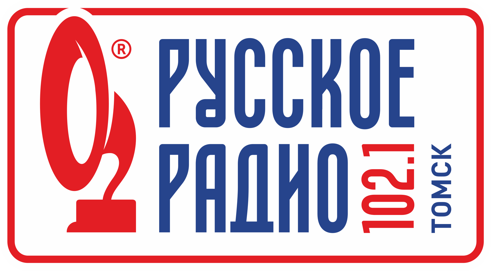
Русское Радио
102.1 FM
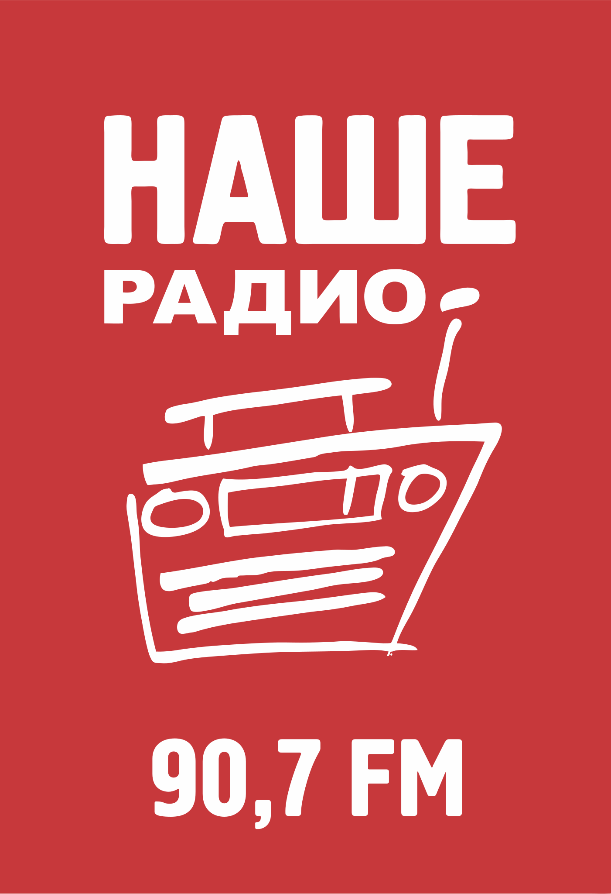
Наше Радио
90.7 FM
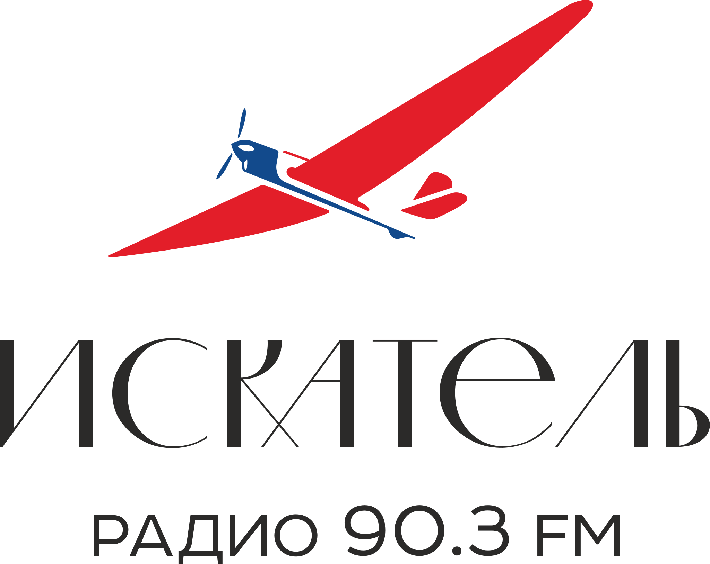
Радио ИСКАТЕЛЬ
90.3 FM
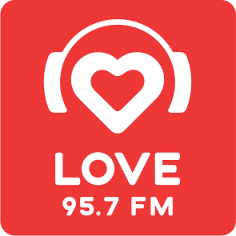
Love Radio
95.7 FM
Радио ENERGY
106.1 FM
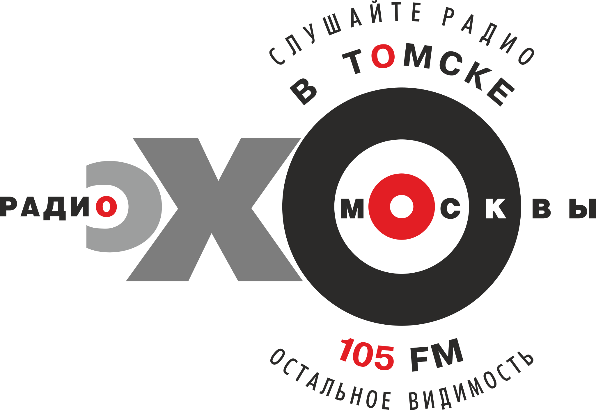
Эхо Москвы в Томске
107.1 FM
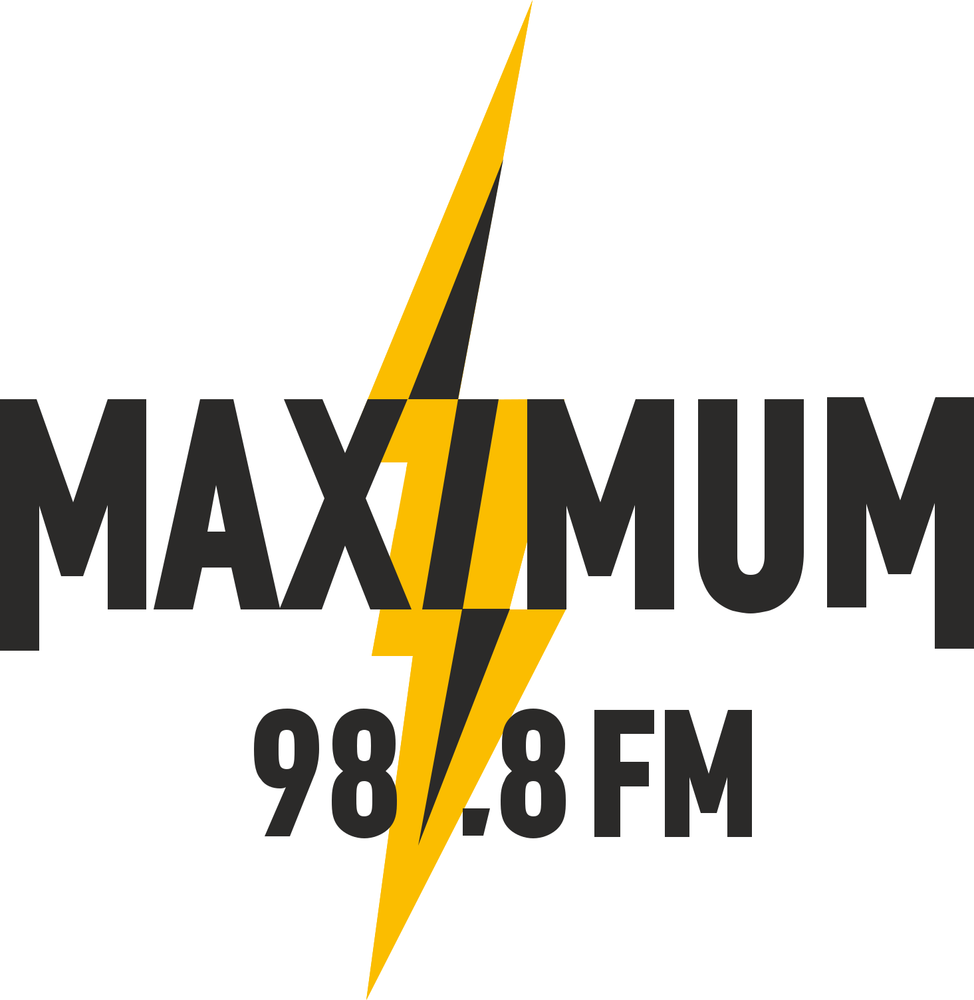
Радио Maximum
98.8 FM
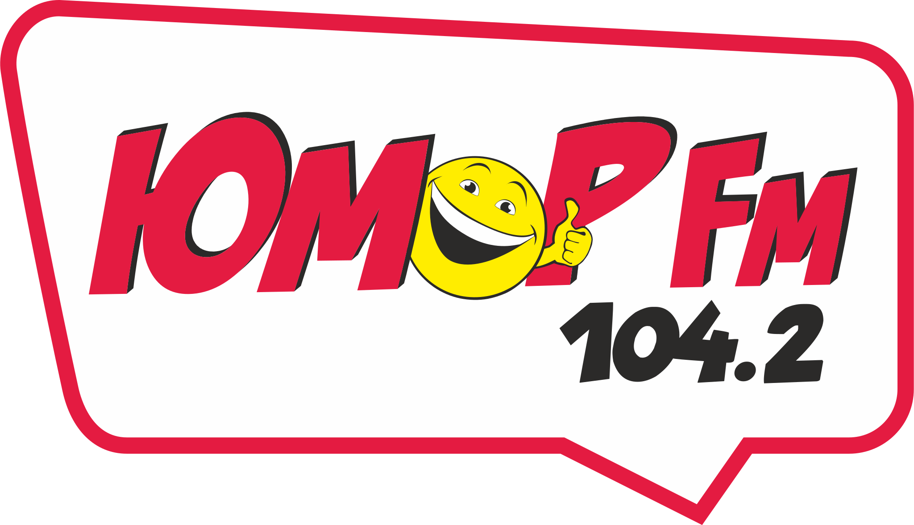
Юмор FM
104.2 FM
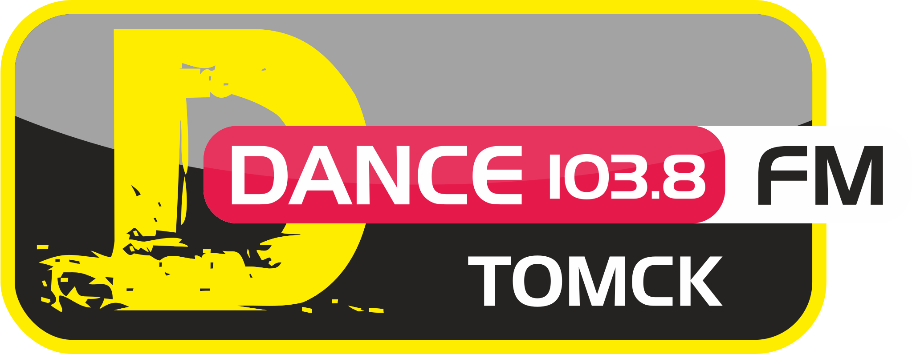
DFM
103.8 FM
Хит FM
101.7 FM
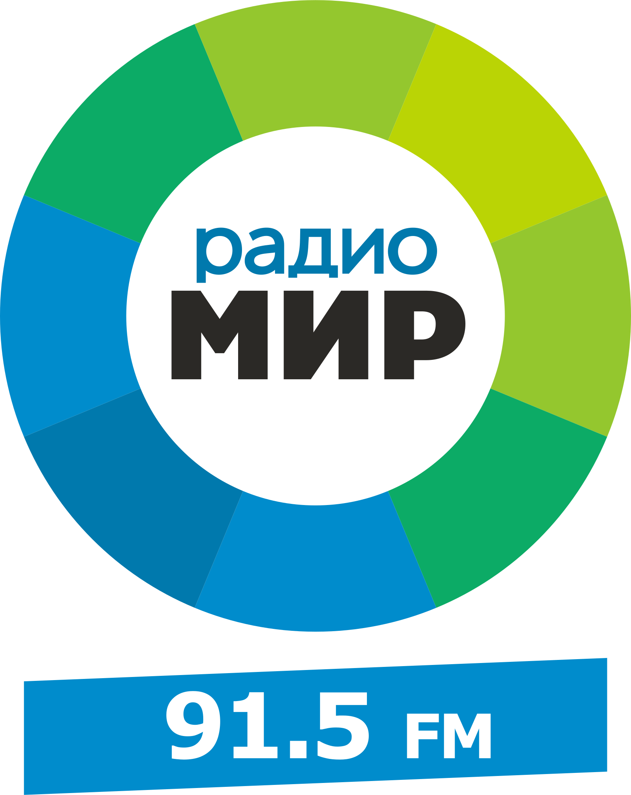
Радио МИР
91.5 FM
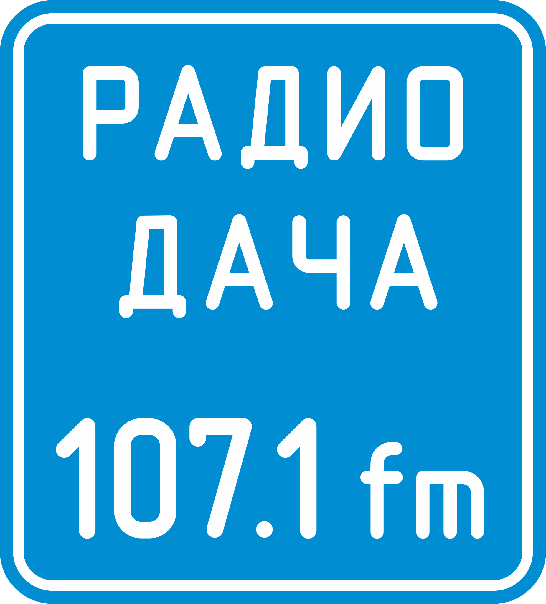
Радио Дача
107.1 FM